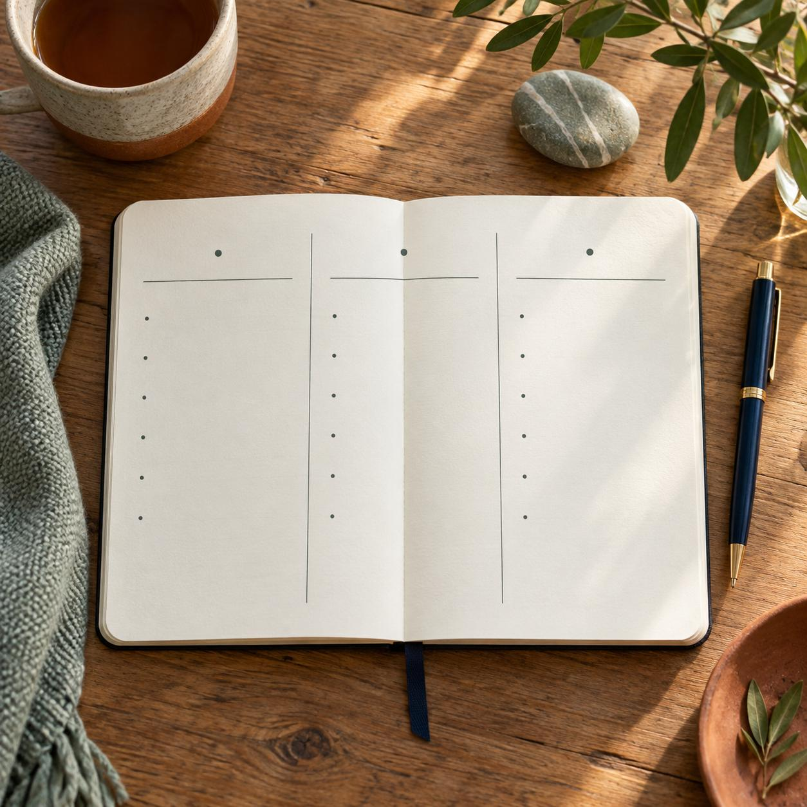
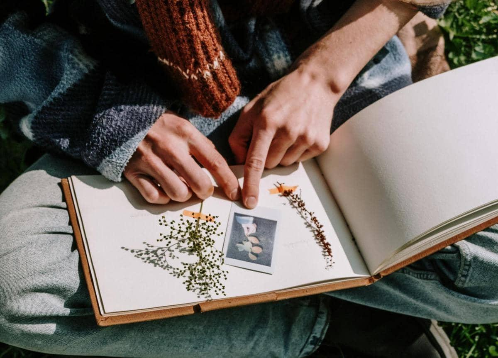
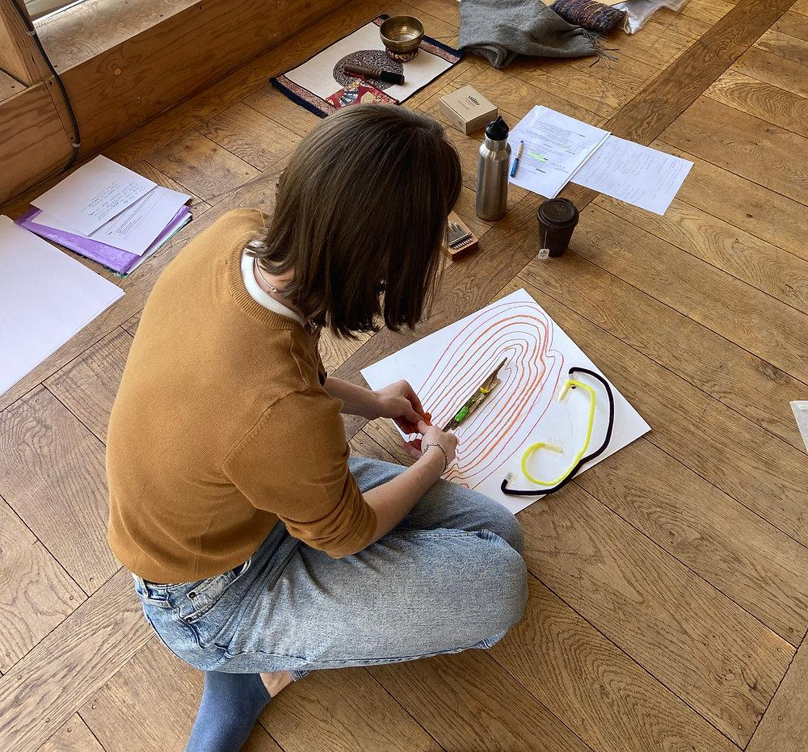

Пространство, чтобы снова услышать собственные желания.
О маршруте
Пространство, чтобы снова услышать собственные желания. Здесь можно двигаться в собственном темпе, обращаясь к материалам и поддержке тогда, когда это нужно.
В этом маршруте вы найдёте:
Понимание своих чувств и потребностей
Практические инструменты для повседневной жизни
Поддержку в сложные моменты
Материалы для самостоятельной работы
Рекомендации специалистов
Когда трудно услышать себя
Иногда мы так долго живём среди чужих ожиданий, обязанностей и решений, которые необходимо принимать, что постепенно перестаём слышать себя.
Мы знаем, что нужно сделать сегодня. Помним, кому позвонить, о ком позаботиться, что закончить и куда успеть. Но на простой вопрос «А чего я хочу?» вдруг оказывается трудно ответить.
И дело не обязательно в том, что у нас нет желаний. Иногда им просто давно не находилось места.
Этот маршрут — приглашение немного замедлиться. Не для того, чтобы срочно найти своё предназначение, изменить жизнь или стать другой версией себя. А чтобы снова начать замечать: что мне нравится, что меня утомляет, что вызывает любопытство, где я чувствую свободу, а где живу по привычке.
Здесь не нужно заранее знать, куда идти. Можно начать с того, чтобы заметить, где ты сейчас.
Материалы и практики
Три способа исследовать свои желания через наблюдение, слова и творчество. Выбери то, что откликается сегодня. Не обязательно проходить всё по порядку.

ПРАКТИКА 01
Практика 1. Что сейчас моё?
Иногда желания трудно отличить от привычного «надо». Эта практика не предлагает отказаться от обязанностей. Она помогает увидеть, где в обычном дне остаётся место твоему выбору.
Продолжить практику →
Как попробовать
Возьми лист и раздели его на три колонки: «Я должна / должен», «Я делаю по привычке», «Я выбираю».
Вспомни вчерашний день. Запиши конкретные действия, не оценивая их.
Выдели одно действие, которое приносило хотя бы немного интереса, спокойствия или удовольствия.
Посмотри, какое маленькое решение ты мог бы принять самостоятельно завтра. Ничего менять немедленно не требуется.
Вопросы для себя
Какая колонка оказалась самой длинной? Что удивило? Есть ли что-то, что я называю обязанностью, хотя когда-то выбрал это сам?

ПРАКТИКА 02
Практика 2. Коллекция маленьких открытий
Это не поиск обязательной радости и не список достижений. Иногда достаточно заметить один оттенок, звук или короткую минуту, когда стало чуть спокойнее.
Продолжить практику →
Как попробовать
В течение трёх дней обращай внимание на небольшие моменты, которые чем-то тебя заинтересовали.
Сохраняй их так, как удобно: фотографией, словом, цветом, быстрым рисунком или короткой заметкой.
В конце дня выбери один момент и вспомни: что именно в нём привлекло внимание?
Через несколько дней посмотри на свою коллекцию. Не ищи закономерность специально — позволь ей проявиться или не проявиться.
Вопросы для себя
К чему я возвращаюсь взглядом? Что хочется повторить? Есть ли в моей коллекции что-то, чему я давно не давал места?
Это ознакомительное описание. Утверждённая полная авторская версия практики «Коллекция маленьких открытий» остаётся без изменений и может быть добавлена отдельно.

ПРАКТИКА 03
Практика 3. Моя территория
Не нужно изображать идеальное место. Можно нарисовать реальную комнату, придуманный остров или просто несколько цветных пятен — пространство, где твоим чувствам есть место.
Продолжить практику →
Как попробовать
Выбери лист, карандаши, краски или материалы для коллажа.
Представь пространство, где тебе сейчас было бы достаточно спокойно. Что в нём есть: свет, тишина, люди, предметы, границы?
Создай изображение без требования красиво рисовать. Можно оставить часть листа пустой.
Найди на рисунке место для себя. Если захочется, добавь то, чего не хватает.
Дай работе название и посмотри, что в ней особенно важно именно сейчас.
Вопросы для себя
Что здесь принадлежит только мне? Кого я хочу пригласить, а кому пока не готов открыть дверь? Какую маленькую часть этого пространства я могу создать в своей повседневности?